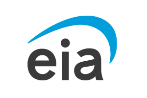
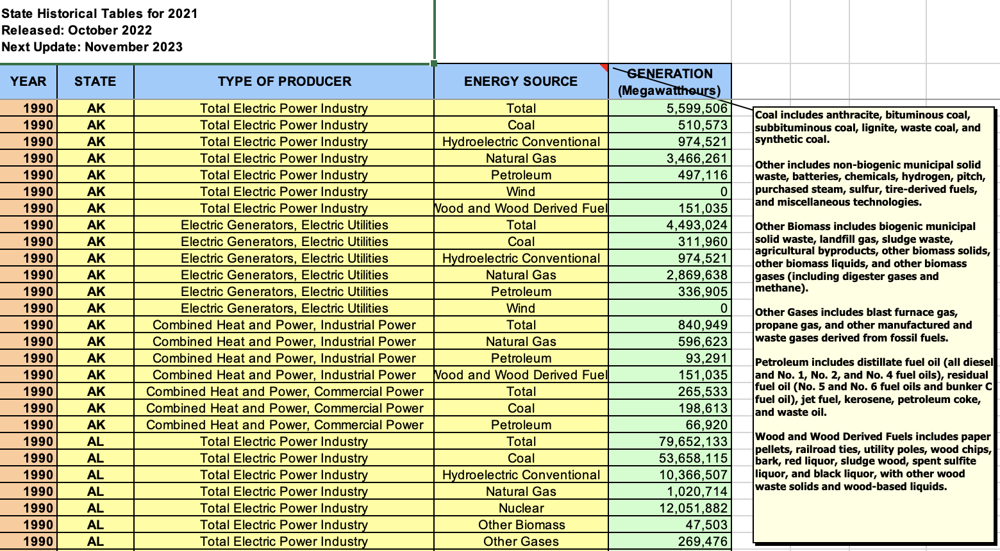
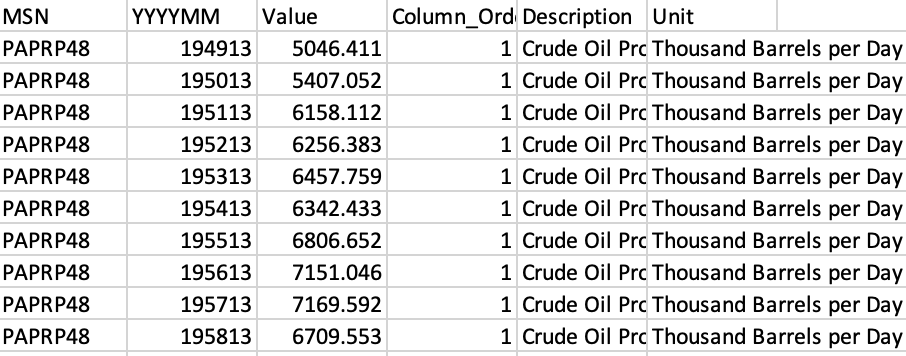
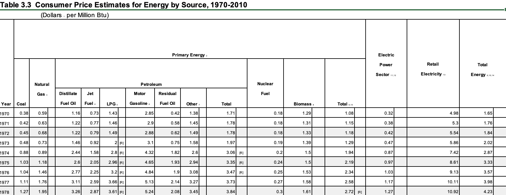
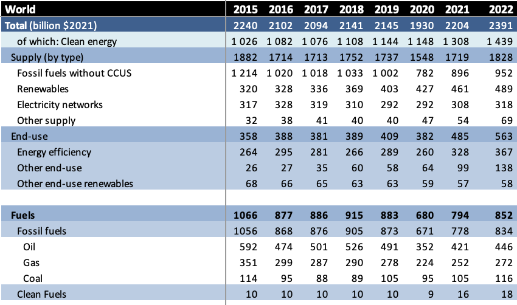

Data Sources

To address the guiding questions outlined on the Introduction Page, data was sourced from the U.S. Energy Information Administration (EIA), and the International Energy Agency (IEA) . As the project develops, more data may be added to this page.
 U.S. Energy Information Administration
1) Total Energy Usage By State
The EIA produces thousands of datasets spanning most facets of energy usage in the United States. The organization is one of the go-to sources for both historical data and energy forecast data, making their Open Data Portal a rich resource for this project. One dataset this project will examine is Net Generation by State by Type of Producer by Energy Source between 1990 and 2021. This will provide insight into how Coal, Hydroelectric, Natural Gas, Petroleum, Wind, and Wood fuel source consumption has evolved over the past 3 decades across all 50 states.
The data can be found here: Net Generation by State by Type of Producer by Energy Source

2) Monthly CO2 Emissions from Coal
The EIA also has data on how many millions of metric tons of CO2 have been released from Coal since 1973. This is an important dataset for my analysis, as the analysis of US energy is directly tied to climate change and a push for cleaner fuel sources. As stated in the introduction, the world is at a critical point in determining our climate future. Analyzing how CO2 emissions, especially from one of the dirtiest fuel sources, have trended over time will be important in forecasting future emissions if we continue on a business as usual path.
The data can be sourced here: Table 11.1 - Carbon dioxide emissions from energy consumption by source

3) Petroleum Exports vs. Imports
Also of interest is the United States’ energy dependence on foreign entities vs. reliance on domestic energy production. To dig into this the EIA provides an overview of Petroleum consumption, production, imports, and outputs starting in 1950 through 2020 to examine how the country’s relationship with foreign entities has evolved. Data is measured in thousands of barrels per day.
Data can be found here: Table 3.1 Petroleum Overview

4) Cost of Energy
The final EIA dataset used examines how energy costs have changed between 1970 to 2010 across many types of energy sources. Downloaded directly from the OpenData portal, this dataset looks at Consumer Price Estimates for Energy by Source, 1970-2010 calculates the cost in dollars per million Btu for coal, natural gas, fuel oil, petroleum, nuclear fuel, and biomass annually. This data will provide insights into how affordable each fuel type has become, and what the cost trajectory for each looks like as the technology improves and we try to forecast into the future.
Data can be found here: Table 3.3 Consumer Price Estimates for Energy by Source, 1970-2010

 International Energy Agency
International Energy Agency
The International Energy Agency is an intergovernmental organization based in Paris that provides data-backed policy recommendations and analysis on questions of global energy. Founded in 1974, their areas of work are promoting energy efficiency, energy security, demand-driven electricity networks, and fostering international partnerships to achieve a clean and sustainable future. One of their datasets, regarding global investment in various energy sources, will provide critical insight into how billions of dollars flow through different fuel sources - either furthering or hampering their global usage.
Data can be found here: World Energy Investment 2022 Datafile
